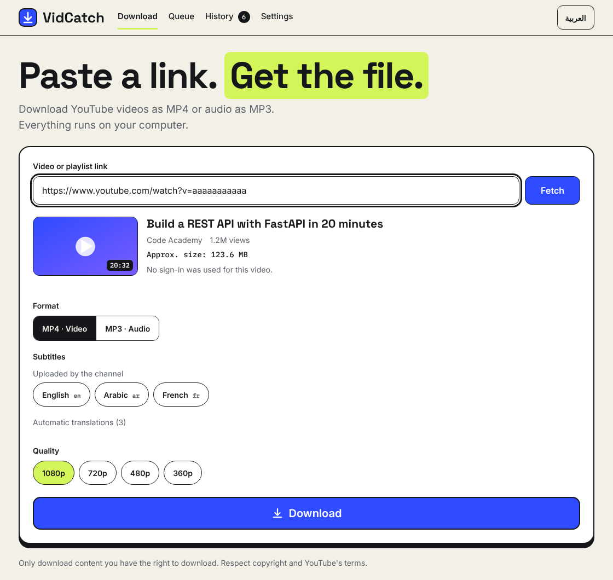

Paste a link. Get the file.
VidCatch downloads YouTube videos, audio and whole playlists to your computer. Line up as many as you like, pause and continue later, and keep everything private: it all runs on your own machine.
Free and open source (MIT) · Windows, Linux, macOS · English and Arabic

Everything you need, nothing you don't
A small, focused downloader built on yt-dlp, with the parts that make long downloads painless.
Download queue
Paste up to 50 links, choose one quality for all or one per video, and let them download one after another.
Pause and resume
Stop any download and pick it up later, even after closing the app or restarting your PC. Unfinished downloads continue where they stopped.
Playlists
Open a playlist, tick the videos you want, and send them to the queue in one click.
Subtitles
Pick the languages you want once. Each video gets the ones it really has, saved as .srt next to the video.
Disk space under control
See the total size of your downloads, the estimate for the queue, and the free space. Move the temporary folder to another drive when C: is full.
English and Arabic
A full right-to-left Arabic interface, switchable at any time.
Three steps
No account, no sign-up, no browser extension.
Paste
Copy a YouTube link (or many) and paste it into VidCatch.
Choose
MP4 video or MP3 audio, the quality, and the subtitle languages.
Done
Files land in your Downloads folder, and the History tab keeps track of them.
A look inside
Click a picture to see it full size. The screenshots use sample data.


Get VidCatch
No Python needed. Unzip, run, and you're ready. The latest version is always at the Releases page.
Windows Your system
- Unzip the file
- Open the
VidCatchfolder - Run
VidCatch.exe
macOS Your system
- Open Terminal in your Downloads folder
tar -xzf VidCatch-macos.tar.gz./VidCatch/VidCatch
Linux Your system
- Open a terminal in your Downloads folder
tar -xzf VidCatch-linux.tar.gz./VidCatch/VidCatch
First start: the builds are not code-signed yet, so Windows SmartScreen or macOS Gatekeeper may show a warning. On Windows choose More info, then Run anyway. On macOS right-click the file and choose Open.
FFmpeg: VidCatch needs FFmpeg to merge video and audio. It is not included, but VidCatch offers to install it the first time you run it.
Verify your download: every release has a SHA256SUMS.txt file on the Releases page. Prefer Python? See the install-from-source steps.
Your computer, your files
VidCatch is a small server that runs on your own PC and opens in a window. Nothing goes through anyone else's servers.
- No account and no tracking. Settings, history and the queue stay in a folder on your PC.
- Sign-in only when YouTube insists. VidCatch always tries without logging in first. If a video really needs it (age-restricted, private, "confirm you're not a bot"), it asks before using your browser's session.
- No cookie files saved. Only the browser and profile name are remembered, and you can turn it off at any time.
- Open source. Read every line, or build it yourself.
Good to know
Is it legal to use?
Download only content you own or have permission to download, and respect YouTube's Terms of Service and the copyright laws of your country. VidCatch is not affiliated with YouTube or Google.
What if a download stops working?
YouTube changes often. VidCatch checks for a newer yt-dlp when it starts and updates it with one click. Error messages have a short code (like E140) with the steps to fix it.
Does it work with other sites?
VidCatch is built for YouTube. The engine, yt-dlp, supports many more sites, and wider support may come later.
Where do my files go?
To the download folder you choose in Settings (by default Downloads/VidCatch). Unfinished downloads wait in a temporary folder that you can move to another drive.
How do I report a problem?
Open an issue on GitHub. When a download fails, the error message has a Copy details button that copies what helps, without links, file names or account names.